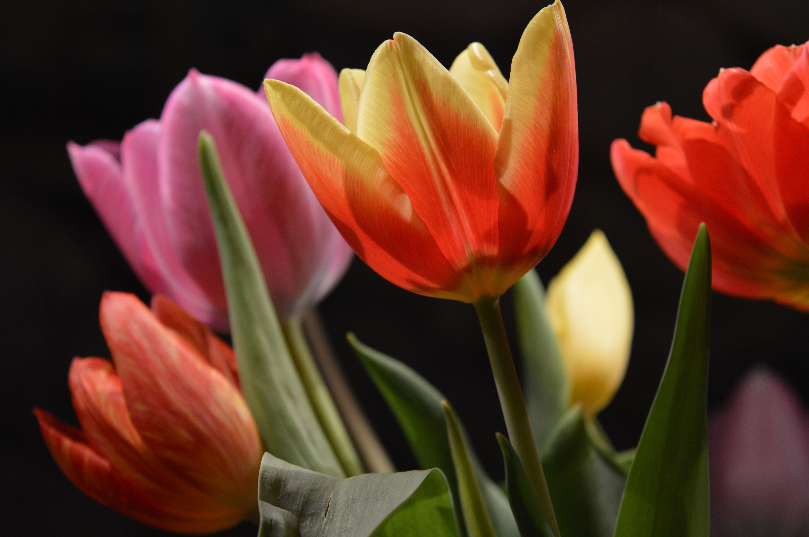

Flowers
Roses are the masterpiece of all the flowers as it emits beautiful positive feelings.
In the world full of different flowers, Rose is considered as the symbol of love.
They have established a strong base in human thoughts and hearts.
That's how they mesmerized us with their beauty and appearance.
The meaning of tulips is generally perfect love. Like many flowers, different colors of tulips also often carry their own significance. Red tulips are most strongly associated with true love, while purple symbolizes royalty.
